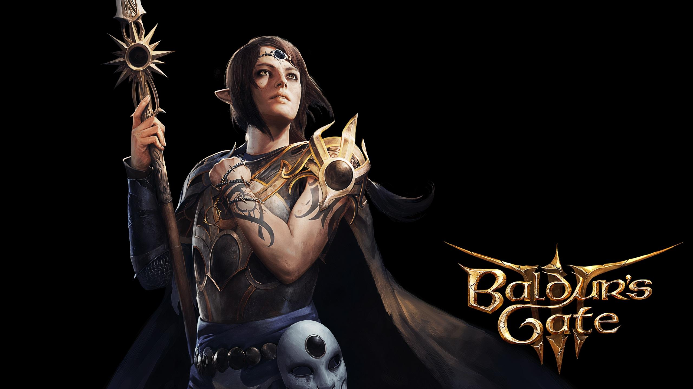

ABOUT BALDUR’S GATE 3
Gather your party, and return to the Forgotten Realms in a tale of fellowship and
betrayal, sacrifice and survival, and the lure of absolute power.
Mysterious abilities are awakening inside you, drawn from a Mind Flayer parasite
planted in your brain. Resist, and turn darkness against itself. Or embrace corruption, and become
ultimate evil.
From the creators of Divinity: Original Sin 2 comes a next-generation RPG, set in the
world of Dungeons and Dragons.
Screen


INFO

Gather your party, and return to the Forgotten Realms in a tale of fellowship and betrayal,
sacrifice and survival, and the lure of absolute power.

From the creators of Divinity: Original Sin 2 comes a next-generation RPG, set in the world of
Dungeons and Dragons.